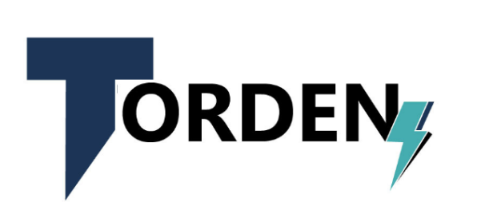

Hola somos Torden!!
¡Bienvenidos a nuestro mundo de innovación y automatización del servicio
al cliente! En nuestra empresa, nos apasiona llevar la atención al
cliente a un nuevo nivel utilizando la poderosa tecnología del modelo de
lenguaje natural GPT-3.5 de OpenAI.
Imagínate un mundo en el que las interacciones con los clientes sean
fluidas, conversacionales y personalizadas. Con nuestro enfoque
vanguardista, transformamos el modo en que las empresas interactúan con
sus clientes, ofreciendo respuestas inteligentes y soluciones eficientes
a través de nuestro modelo de lenguaje natural. Cada interacción se
convierte en una experiencia única, ya que GPT-3.5 nos permite
comprender las necesidades y preguntas de los clientes de manera precisa
y rápida.
Con su potente capacidad para generar respuestas coherentes y
contextuales, nuestros servicios de automatización mejoran la eficiencia
y la calidad de las interacciones con los clientes. Pero no nos
detenemos ahí. Nuestro equipo de expertos en IA trabaja constantemente
para entrenar y afinar nuestro modelo GPT-3.5, asegurando que esté a la
vanguardia de las últimas innovaciones en el campo del procesamiento del
lenguaje natural.
¡Descubre la diferencia que la automatización del servicio al cliente con
GPT-3.5 puede hacer en tu empresa! Permítenos llevar tu atención al
cliente a nuevos horizontes, ofreciendo experiencias excepcionales que
deleitarán a tus clientes y te destacarán en el mercado.
